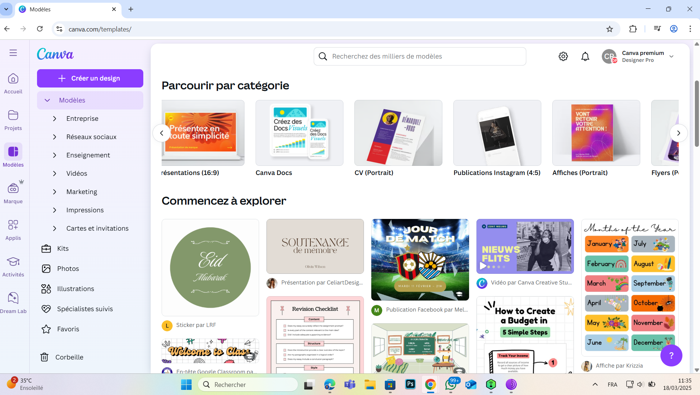

Comment utiliser Canva Pro pour créer des designs professionnels
Canva Pro est un outil puissant pour créer des designs professionnels. Voici quelques astuces pour bien l'utiliser :
- Modèles premium : Utilisez des modèles exclusifs pour vos projets.
- Outils d'IA : Expérimentez avec des outils comme le redimensionnement automatique ou la suppression d'arrière-plan.
- Stockage cloud : Sauvegardez vos designs en ligne pour y accéder de n'importe où.